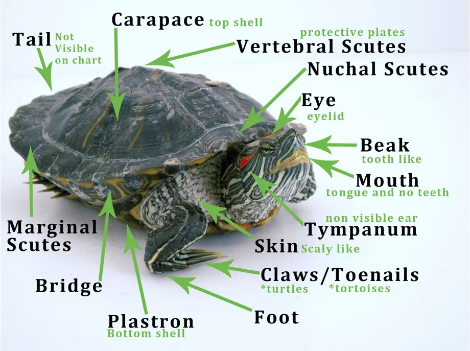
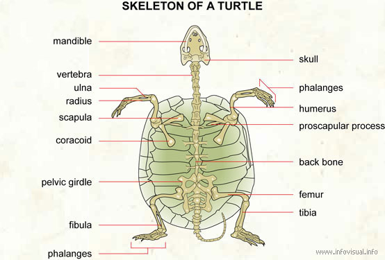
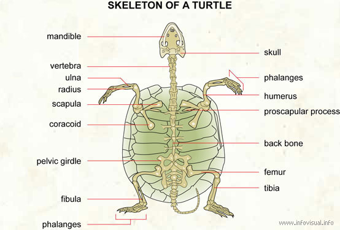

Here are some care sheets:

internal anatomy.jpg) 


A Turtle can be easily identified by its shell. The shell plays a vital
part in protection.
Not much has changed in over 200 million years of
evolution. Turtle shell form and function is still the same.
Shell is divided in two parts.
Upper part is called the carapace and the bottom plastron.
On the turtle’s side plastron and carapace are joined together with bony
structures called bridges.
The inner layer of the shell is made out
of bones. Including the backbone and the ribs. That basically means that
the turtle can’t leave the shell. Turtle shell is covered with bony scales
(also called scutes). Scutes are made of keratin.
Substance found in hair and nails of other animals. Melanin in scutes is
the reason for various pigmentation and different designs.